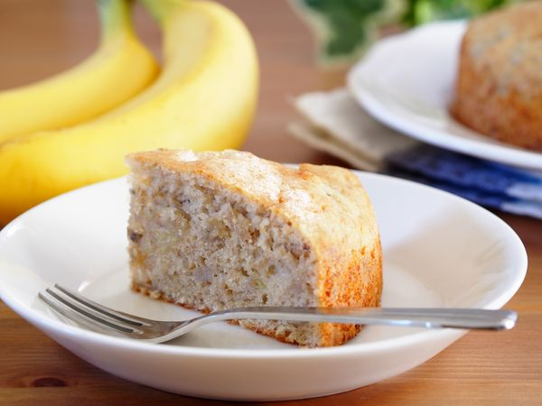

Gateau à la banane

Description
Découvrez la recette du gâteau à la banane, un délicieux gâteau onctueux et
moelleux à savourer au goûter ou lors d'un brunch sucré accompagné d'un peu
de chocolat. Une recette familiale facile à faire.
Ingredients
- 2 bananes
- 125g de beurre
- 1/2 paquet de levure
- 100g de sucre
- 150g de farine
- 3 oeufs
- vanille
- rhum
Steps
- Mélanger les oeufs et le sucre.
- Ajouter le beurre fondu, puis la farine et la levure.
- Couper les bananes en tous petits morceaux (ou les écraser au choix), et les ajouter au mélange.
- Aromatiser avec le rhum et la vanille selon les goûts....
- Verser le tout dans un moule à cake beurré et fariné.
- Laisser cuire environ 30 mn à four thermostat 6.